| 1 |
Andrijevica
|
Northern Region |
4,403 |
- Old Town Clock Tower
- St. George's Church
- Andrijevica Cultural Center
|
 |
| 2 |
Bar
|
Southern Region |
44,054 |
- Bar Cathedral: A cathedral located in the city of Bar, dedicated to the Assumption of Mary.
- Old Town of Bar: The old town of Bar, with historic architecture and cultural significance.
- St. George's Church: A church dedicated to Saint George, located in Bar.
|
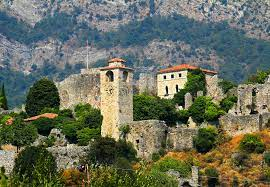 |
| 3 |
Berane
|
Northern Region |
26,013 |
- Monastery of Saint Peter.
- Berane Fortress.
- Church of the Holy Spirit.
|
 |
| 4 |
Bijelo Polje
|
Northern Region |
41,018 |
- Bijelo Polje Mosque: A mosque located in Bijelo Polje.
- Bijelo Polje Town Hall: The town hall of Bijelo Polje, a historic building.
- Bijelo Polje Cultural Center: A center for cultural events and exhibitions in Bijelo Polje.
|
 |
| 5 |
Budva
|
Southern Region |
22,660 |
- Budva Old Town, charming medieval city.
- St. Nicholas Island, monastery, beach.
- Sveti Stefan, luxury resort island.
|
 |
| 6 |
Cetinje
|
Central Region |
14,923 |
- Cetinje Monastery: A monastery located in Cetinje, founded in the 15th century.
- Cetinje National Museum: A national museum located in Cetinje, showcasing the history and culture of Montenegro.
- Lovcen: a historical mountain located next to the city.
|
 |
| 7 |
Danilovgrad
|
Central Region |
18,305 |
- Danilovgrad Church: A church located in Danilovgrad.
- Danilovgrad Cultural Center: A center for cultural events and exhibitions in Danilovgrad.
- Danilovgrad Town Hall: The town hall of Danilovgrad, a historic building.
|
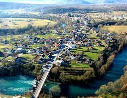 |
| 8 |
Gusinje
|
Northern Region |
3,995 |
- Gusinje Mosque: A mosque located in Gusinje.
- Gusinje Cultural Center: A center for cultural events and exhibitions in Gusinje.
- Gusinje Town Hall: The town hall of Gusinje, a historic building.
|
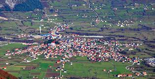 |
| 9 |
Herceg Novi
|
Southern Region |
30,356 |
- Kanli Kula, 16th-century fort.
- Savina Monastery, Serbian Orthodox monastery.
- Forte Mare, medieval castle.
|
 |
| 10 |
Kolasin
|
Northern Region |
20,000 |
- Kolasin Monastery: A monastery located in Kolasin.
- Kolasin Cultural Center: A center for cultural events and exhibitions in Kolasin.
- Kolasin Town Hall: The town hall of Kolasin, a historic building.
|
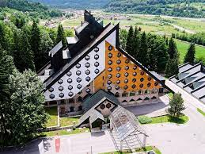 |
| 11 |
Kotor
|
Southern Region |
22,713 |
- Kotor Old Town, UNESCO World Heritage Site.
- Our Lady of the Rocks, island church.
- Perast, historic town, Baroque churches.
|
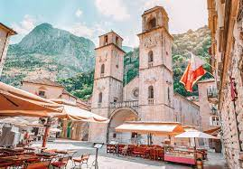 |
| 12 |
Mojkovac
|
Northern Region |
7,232 |
- Mojkovac Monastery: A monastery located in Mojkovac.
- Mojkovac Cultural Center: A center for cultural events and exhibitions in Mojkovac.
- Mojkovac Town Hall: The town hall of Mojkovac, a historic building.
|
 |
| 13 |
Niksic
|
Central Region |
68,172 |
- Niksic Cathedral: A cathedral located in Niksic, dedicated to the Assumption of Mary.
- Niksic Old Town: The old town of Niksic, with historic architecture and cultural significance.
- Niksic Cultural Center: A center for cultural events and exhibitions in Niksic.
|
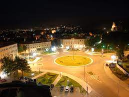 |
| 14 |
Petnjica
|
Northern Region |
5,275 |
- Cardak Hasenbegovic: historical landmark.
- Hamda's tower.
- The pyramid mountain.
|
 |
| 15 |
Plav
|
Nothern Region |
8,191 |
- Plav Mosque: A mosque located in Plav.
- Plav Cultural Center: A center for cultural events and exhibitions in Plav.
- Plav Town Hall: The town hall of Plav, a historic building.
|
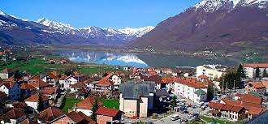 |
| 16 |
Pljevlja
|
Northern Region |
25,917 |
- Pljevlja Monastery: A monastery located in Pljevlja.
- Pljevlja Cultural Center: A center for cultural events and exhibitions in Pljevlja.
- Pljevlja Town Hall: The town hall of Pljevlja, a historic building.
|
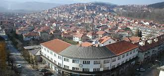 |
| 17 |
Pluzine
|
Northern Region |
2,485 |
- Pluzine Monastery: A monastery located in Pluzine.
- Pluzine Cultural Center: A center for cultural events and exhibitions in Pluzine.
- Pluzine Town Hall: The town hall of Pluzine, a historic building.
|
 |
| 18 |
Podgorica
|
Central Region |
191,637 |
- Stara Varos, old town with ruins.
- Podgorica Cathedral, largest in Montenegro.
- Duklja, ancient Illyrian region.
|
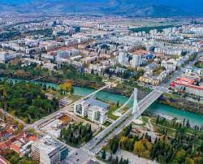 |
| 19 |
Rozaje
|
Northern Region |
22,926 |
- Rozaje Mosque: A mosque located in Rozaje.
- Rozaje Cultural Center: A center for cultural events and exhibitions in Rozaje.
- Rozaje Town Hall: The town hall of Rozaje, a historic building.
|
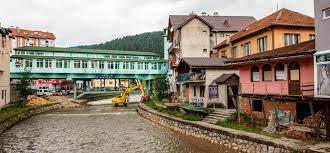 |
| 20 |
Savnik
|
Northern Region |
1,424 |
- Savnik Monastery: A monastery located in Savnik.
- Savnik Cultural Center: A center for cultural events and exhibitions in Savnik.
- Savnik Town Hall: The town hall of Savnik, a historic building.
|
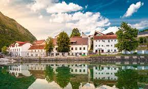 |
| 21 |
Tivat
|
Southern Region |
15,248 |
- Tivat Cathedral: A cathedral located in Tivat, dedicated to the Assumption of Mary.
- Tivat Old Town: The old town of Tivat, with historic architecture and cultural significance.
- Tivat Cultural Center: A center for cultural events and exhibitions in Tivat.
|
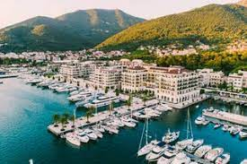 |
| 22 |
Tuzi
|
Central Region |
12,344 |
- Tuzi Mosque: A mosque located in Tuzi.
- Tuzi Cultural Center: A center for cultural events and exhibitions in Tuzi.
- Tuzi Town Hall: The town hall of Tuzi, a historic building.
|
 |
| 23 |
Ulcinj
|
Southern Region |
19,991 |
- Old Town of Ulcinj, narrow streets, houses.
- Long Beach, longest in Montenegro.
- Ulcinj Saltworks, historic site, traditional.
|
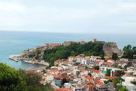 |
| 24 |
Zabljak
|
Northern Region |
2,986 |
- Zabljak Monastery: A monastery located in Zabljak.
- Zabljak Cultural Center: A center for cultural events and exhibitions in Zabljak.
- Zabljak Town Hall: The town hall of Zabljak, a historic building.
|
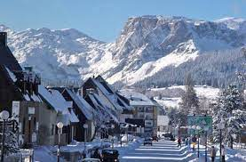 |